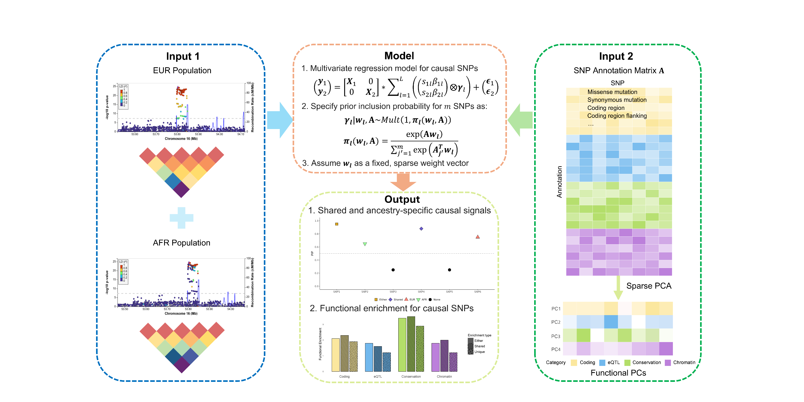

Last updated: 2026-05-20
Checks: 7 0
Knit directory: INFUSE_website/
This reproducible R Markdown analysis was created with workflowr (version 1.7.2). The Checks tab describes the reproducibility checks that were applied when the results were created. The Past versions tab lists the development history.
Great! Since the R Markdown file has been committed to the Git repository, you know the exact version of the code that produced these results.
Great job! The global environment was empty. Objects defined in the global environment can affect the analysis in your R Markdown file in unknown ways. For reproduciblity it’s best to always run the code in an empty environment.
The command set.seed(20260410) was run prior to running
the code in the R Markdown file. Setting a seed ensures that any results
that rely on randomness, e.g. subsampling or permutations, are
reproducible.
Great job! Recording the operating system, R version, and package versions is critical for reproducibility.
Nice! There were no cached chunks for this analysis, so you can be confident that you successfully produced the results during this run.
Great job! Using relative paths to the files within your workflowr project makes it easier to run your code on other machines.
Great! You are using Git for version control. Tracking code development and connecting the code version to the results is critical for reproducibility.
The results in this page were generated with repository version f46ac6d. See the Past versions tab to see a history of the changes made to the R Markdown and HTML files.
Note that you need to be careful to ensure that all relevant files for
the analysis have been committed to Git prior to generating the results
(you can use wflow_publish or
wflow_git_commit). workflowr only checks the R Markdown
file, but you know if there are other scripts or data files that it
depends on. Below is the status of the Git repository when the results
were generated:
Ignored files:
Ignored: .claude/
Ignored: analysis/INFUSE.png
Untracked files:
Untracked: MAFPC_method_guangxin_revision_4.docx
Untracked: analysis/Data_prepare.Rmd
Untracked: analysis/Run_INFUSE.Rmd
Untracked: analysis/annotation_integration.Rmd
Untracked: analysis/custom.css
Untracked: analysis/installation.Rmd
Untracked: analysis/real_data_example.Rmd
Untracked: build_site.R
Untracked: code/data_prep_utils.R
Untracked: code/plot_utils.R
Unstaged changes:
Modified: analysis/_site.yml
Note that any generated files, e.g. HTML, png, CSS, etc., are not included in this status report because it is ok for generated content to have uncommitted changes.
These are the previous versions of the repository in which changes were
made to the R Markdown (analysis/index.Rmd) and HTML
(docs/index.html) files. If you’ve configured a remote Git
repository (see ?wflow_git_remote), click on the hyperlinks
in the table below to view the files as they were in that past version.
| File | Version | Author | Date | Message |
|---|---|---|---|---|
| Rmd | f46ac6d | Guangxin Chen | 2026-05-20 | Start workflowr project. |
| Rmd | b5e8dfa | Guangxin Chen | 2026-05-20 | Start workflowr project. |
| Rmd | d10f881 | Guangxin Chen | 2026-04-10 | Start workflowr project. |
INFUSE (INtegrating Functional annotations into mUlti-ancestry fine-mapping via Sum of single Effect model) is an R package for statistical fine-mapping of causal genetic variants using GWAS summary statistics from multiple ancestry groups. INFUSE extends the MESuSiE (Gao et al., 2024) framework to jointly model shared and ancestry-specific causal signals while leveraging functional genomic annotations to improve variant prioritization.

Overview of the INFUSE framework.
Standard fine-mapping methods typically operate on a single ancestry at a time and ignore the rich functional annotation data generated by large-scale genomic consortia (e.g., ENCODE (ENCODE Project Consortium, 2012), Roadmap Epigenomics (Roadmap Epigenomics Consortium, 2015)). INFUSE addresses both limitations simultaneously:
Multi-ancestry modeling: By combining data from diverse populations, INFUSE gains power to distinguish true causal variants from those in spurious LD, and can identify variants that are causal in only a subset of ancestries.
Functional annotation integration: Incorporating per-SNP functional priors (e.g., chromatin accessibility, transcription factor binding, evolutionary conservation) shifts probability mass toward biologically plausible causal variants, improving credible set resolution.
We model the phenotype of each individual within each ancestry as a linear function of genotype and residual noise. For ancestry \(k \in \{1, 2\}\), let \(\mathbf{y}_k \in \mathbb{R}^{n_k}\) denote the phenotypic vector of \(n_k\) individuals, and \(\mathbf{X}_k \in \mathbb{R}^{n_k \times m}\) the genotype matrix at \(m\) genetic variants. The joint model across ancestries is:
\[\begin{pmatrix} \mathbf{y}_1 \\ \mathbf{y}_2 \end{pmatrix} = \begin{pmatrix} \mathbf{X}_1 & \mathbf{0} \\ \mathbf{0} & \mathbf{X}_2 \end{pmatrix} \begin{pmatrix} \mathbf{b}_1 \\ \mathbf{b}_2 \end{pmatrix} + \begin{pmatrix} \boldsymbol{\epsilon}_1 \\ \boldsymbol{\epsilon}_2 \end{pmatrix} \tag{1}\]
where \(\mathbf{b}_1, \mathbf{b}_2 \in \mathbb{R}^m\) are the SNP effect size vectors, and \(\boldsymbol{\epsilon}_k \sim N(\mathbf{0}, \sigma_{e_k}^2 \mathbf{I}_{n_k})\) is the residual error. Both genotype matrices and phenotype vectors are standardized to have zero mean and unit variance.
The primary objective of fine-mapping is to identify non-zero entries of \((\mathbf{b}_1, \mathbf{b}_2)^T\). Following Gao et al., we express the stacked effect vector as a sum of \(L\) sparse, ancestry-informed single effects:
\[\begin{pmatrix} \mathbf{b}_1 \\ \mathbf{b}_2 \end{pmatrix} = \sum_{\ell=1}^{L} \begin{pmatrix} s_{1\ell}\,\beta_{1\ell} \\ s_{2\ell}\,\beta_{2\ell} \end{pmatrix} \otimes \boldsymbol{\gamma}_\ell \tag{2}\]
where \(\boldsymbol{\gamma}_\ell \in \mathbb{R}^m\) is a binary indicator vector specifying which SNP carries the \(\ell\)-th causal effect. Each \(\boldsymbol{\gamma}_\ell\) follows a multinomial distribution:
\[\boldsymbol{\gamma}_\ell \sim \mathrm{Mult}(1,\, \boldsymbol{\pi}_\ell), \quad \boldsymbol{\pi}_\ell = (\pi_{\ell 1}, \ldots, \pi_{\ell m}), \quad \sum_{j=1}^{m} \pi_{\ell j} = 1 \tag{3}\]
where \(\boldsymbol{\pi}_\ell\) encodes the prior causal probability of the \(\ell\)-th effect being assigned to each SNP.
Functional annotations provide biologically grounded evidence for assessing the likelihood that a variant is causal. Let \(\mathbf{A} \in \mathbb{R}^{m \times d}\) denote the annotation matrix, where each row \(\mathbf{A}_j\) is the \(d\)-dimensional annotation feature vector for SNP \(j\). The prior probability that SNP \(j\) is causal for the \(\ell\)-th single effect is modeled via a softmax function:
\[\pi_{\ell j} = \frac{\exp(\mathbf{A}_j^T \mathbf{w}_\ell)}{\displaystyle\sum_{j'=1}^{m} \exp(\mathbf{A}_{j'}^T \mathbf{w}_\ell)} \tag{5}\]
where \(\mathbf{w}_\ell \in \mathbb{R}^d\) is the annotation enrichment weight vector for the \(\ell\)-th effect, assumed sparse and shared across ancestries.
To handle high dimensionality and collinearity among annotations, INFUSE applies sparse PCA (Zou et al., 2006) to \(\mathbf{A}\):
\[\mathbf{A} = \mathbf{Z} \mathbf{V}^T \tag{6}\]
where \(\mathbf{Z} \in \mathbb{R}^{m \times k}\) contains the top \(k\) sparse principal components and \(\mathbf{V} \in \mathbb{R}^{d \times k}\) is the sparse loading matrix. Substituting into Equation (5):
\[\pi_{\ell j} = \frac{\exp(\mathbf{Z}_j^T \mathbf{w}_\ell)}{\displaystyle\sum_{j'=1}^{m} \exp(\mathbf{Z}_{j'}^T \mathbf{w}_\ell)}\]
where \(\mathbf{w}_\ell \in \mathbb{R}^k\) now operates on the low-dimensional sparse PC space. The number of components \(k\) and sparsity level are selected automatically via a modified Bayesian Information Criterion (BIC).
| Output | Description |
|---|---|
$pip |
Per-SNP Posterior Inclusion Probability for each ancestry and jointly |
$cs |
95% Credible Sets — groups of SNPs containing a causal variant with 95% probability |
$annot_weights |
Estimated annotation weight vectors \(\{\mathbf{w}_\ell\}_{\ell=1}^L\) |
$alpha |
Posterior probability matrix (\(L \times m\)) for each single-effect component |
$lbf |
Log Bayes factors per SNP |
INFUSE is most powerful when:
Note: INFUSE is intended strictly for research purposes. Results should be interpreted in the context of study design, population structure, and the quality of input data.
sessionInfo()R version 4.2.2 (2022-10-31)
Platform: x86_64-pc-linux-gnu (64-bit)
Running under: Rocky Linux 8.10 (Green Obsidian)
Matrix products: default
BLAS/LAPACK: /apps/spack/negishi/apps/openblas/0.3.21-gcc-12.2.0-lzvicim/lib/libopenblas_zenp-r0.3.21.so
locale:
[1] LC_CTYPE=en_US.UTF-8 LC_NUMERIC=C
[3] LC_TIME=en_US.UTF-8 LC_COLLATE=en_US.UTF-8
[5] LC_MONETARY=en_US.UTF-8 LC_MESSAGES=en_US.UTF-8
[7] LC_PAPER=en_US.UTF-8 LC_NAME=C
[9] LC_ADDRESS=C LC_TELEPHONE=C
[11] LC_MEASUREMENT=en_US.UTF-8 LC_IDENTIFICATION=C
attached base packages:
[1] stats graphics grDevices utils datasets methods base
other attached packages:
[1] workflowr_1.7.2
loaded via a namespace (and not attached):
[1] Rcpp_1.1.1 highr_0.11 compiler_4.2.2 pillar_1.9.0
[5] bslib_0.8.0 later_1.3.2 git2r_0.36.2 jquerylib_0.1.4
[9] tools_4.2.2 getPass_0.2-4 digest_0.6.37 jsonlite_2.0.0
[13] evaluate_1.0.5 lifecycle_1.0.5 tibble_3.2.1 png_0.1-7
[17] pkgconfig_2.0.3 rlang_1.2.0 cli_3.6.3 rstudioapi_0.14
[21] yaml_2.3.10 xfun_0.48 fastmap_1.2.0 httr_1.4.7
[25] stringr_1.5.1 knitr_1.48 fs_2.0.1 vctrs_0.6.5
[29] sass_0.4.9 grid_4.2.2 rprojroot_2.1.1 glue_1.8.0
[33] R6_2.6.1 processx_3.8.7 fansi_1.0.6 rmarkdown_2.28
[37] callr_3.7.6 magrittr_2.0.3 whisker_0.4 ps_1.9.2
[41] promises_1.3.0 htmltools_0.5.8.1 httpuv_1.6.6 utf8_1.2.4
[45] stringi_1.8.4 cachem_1.1.0